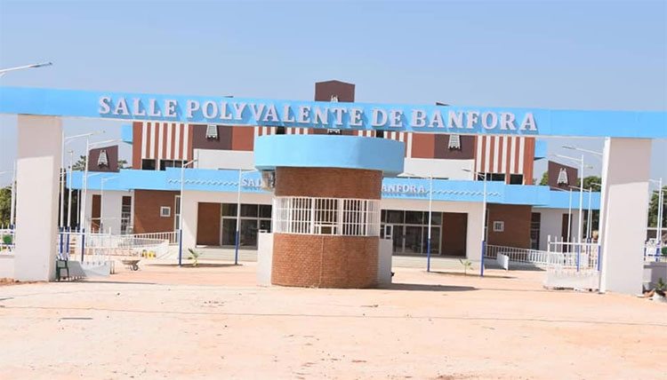
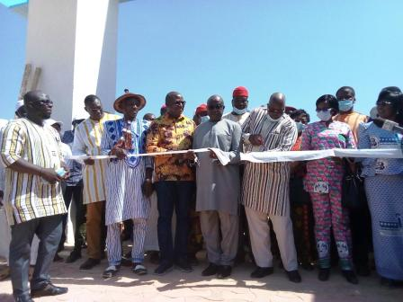

La Salle Polyvalente de Banfora est une infrastructure moderne située dans la ville de Banfora, chef-lieu de la région des Cascades, au Burkina Faso. Elle a été inaugurée en décembre 2020 dans le cadre des festivités du 60ᵉ anniversaire de l'indépendance du pays. Cette salle est conçue pour accueillir divers événements culturels, sociaux et éducatifs, contribuant ainsi au rayonnement de la ville et de la région.
Description
La Salle Polyvalente de Banfora est située dans le secteur n°9 de la ville, précisément à Bounouna, sur l'axe Banfora-Bobo-Dioulasso. Elle a été construite sur une superficie de 2 hectares et dispose d'une capacité d'accueil de 1 000 places assises. L'architecture du bâtiment s'inspire des éléments caractéristiques de la région des Cascades, tels que les pics de Sindou, les chutes d'eau des cascades et les dômes de Fabédougou. Des motifs de balafons, instrument emblématique de la région, sont également intégrés dans la conception de la salle.
L'intérieur de la salle est équipé pour accueillir des spectacles, des conférences, des cérémonies officielles et d'autres événements de grande envergure. Elle comprend une salle principale des spectacles, une salle de créativité, des vestiaires, des salles de réunion, un salon VIP, une cabine technique, etc. Cette infrastructure moderne offre ainsi un cadre propice pour des manifestations culturelles et sociales de qualité.

Historique
La construction de la Salle Polyvalente de Banfora s'inscrit dans le cadre des festivités du 11 décembre 2020, célébrant le 60ᵉ anniversaire de l'indépendance du Burkina Faso. Dans ce contexte, plusieurs infrastructures ont été réalisées ou rénovées dans la ville de Banfora, notamment la place de la Nation, la cité du 11 décembre (logements sociaux), l'axe du défilé, le stade régional, etc. Ces réalisations visent à doter la région des Cascades d'infrastructures modernes pour impulser le développement local.
La salle polyvalente a été officiellement inaugurée le 2 décembre 2020 par le ministre d'État Siméon Sawadogo, en présence des autorités locales et des populations. Elle a été conçue selon les caractéristiques architecturales de la région des Cascades, intégrant des éléments culturels et naturels emblématiques.
Depuis son inauguration, la Salle Polyvalente de Banfora est utilisée pour divers événements culturels, sociaux et éducatifs. Elle a notamment servi de cadre à la 7ᵉ édition du Festival Scolaire de Musique et de Danse (FESCOM-D) de Banfora, organisée en mars 2024 par l'Association des Jeunes pour le Renouveau Culturel des Cascades (AJRCC). Cet événement a réuni des centaines d'élèves et d'étudiants de la ville, mettant en valeur les talents locaux dans plusieurs disciplines culturelles.

La gestion de la Salle Polyvalente de Banfora a été confiée au Conseil régional des Cascades, tandis que la Place de la Nation, située à proximité, est gérée par la commune de Banfora. Les autorités locales ont exprimé leur engagement à entretenir ces infrastructures et à les utiliser de manière optimale pour le bien-être des populations.